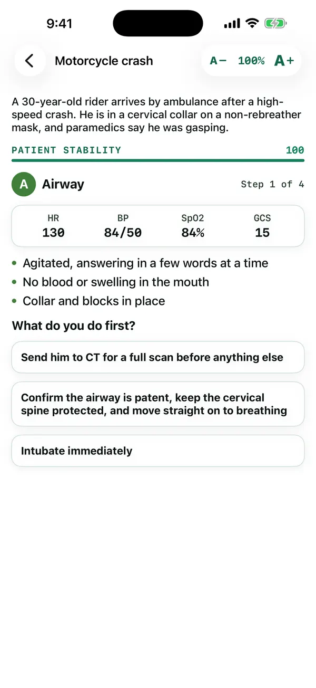

Acute care · Branching case
Trauma Bay
Primary survey under pressure.
Trauma resuscitations, one decision at a time through airway, breathing, circulation, disability and exposure. Poor choices cost stability; dangerous ones can cost the patient.
Free preview: the first case. Unlock for the full library. $3.99/month or $29.99/year
Live demo of Trauma Bay
Try it: case 1, the motorcycle crash
Choose the best action at each step of the primary survey. Your choices change the patient.
In the app
A real screen from Trauma Bay
From the iPhone app, in a pre-release build. The Android app follows the same design, and the text size can be changed from 40% to 300% on every screen.

Sources
Every fact in this app is cited
These are the references this app draws on. Inside the app, each answer links to its source in a reading window that keeps your place.
- Cyklokapron (tranexamic acid) prescribing informationNLM DailyMed (FDA-approved prescribing information) · FDA label / NLM DailyMed
- Warfarin sodium tablets prescribing informationNLM DailyMed (FDA-approved prescribing information) · FDA label / NLM DailyMed
- Effects of tranexamic acid on death, vascular occlusive events, and blood transfusion in trauma patients with significant haemorrhage (CRASH-2)London School of Hygiene & Tropical Medicine repository (Lancet 2010) · CRASH-2 trial (LSHTM)
- Hemothorax (encyclopedia)National Library of Medicine, MedlinePlus · NIH / NLM MedlinePlus
- Collapsed lung (pneumothorax) (encyclopedia)National Library of Medicine, MedlinePlus · NIH / NLM MedlinePlus
- Spinal cord trauma (encyclopedia)National Library of Medicine, MedlinePlus · NIH / NLM MedlinePlus
- Cardiac tamponade (encyclopedia)National Library of Medicine, MedlinePlus · NIH / NLM MedlinePlus
- Traumatic Brain InjuryNational Library of Medicine, MedlinePlus · NIH / NLM MedlinePlus
- Head injury: assessment and early management (NG232)National Institute for Health and Care Excellence (NICE) · NICE (UK)
- Major trauma: assessment and initial management (NG39)National Institute for Health and Care Excellence (NICE) · NICE (UK)
- Spinal Cord InjuryNational Institute of Neurological Disorders and Stroke (NIH) · NINDS / NIH
- Traumatic Brain Injury (TBI)National Institute of Neurological Disorders and Stroke (NIH) · NINDS / NIH
- The European guideline on management of major bleeding and coagulopathy following trauma: fifth editionEuropean Task Force, Crit Care 2019 (via PubMed Central) · European guideline (PMC)
- Pelvic trauma: WSES classification and guidelinesWorld Society of Emergency Surgery, World J Emerg Surg 2017 (via PubMed Central) · WSES guideline (PMC)
- Airway ManagementStatPearls Publishing, National Library of Medicine (NCBI Bookshelf) · NIH / NLM
- Emergency Department ThoracotomyStatPearls Publishing, National Library of Medicine (NCBI Bookshelf) · NIH / NLM
- Glasgow Coma ScaleStatPearls Publishing, National Library of Medicine (NCBI Bookshelf) · NIH / NLM
- Hemorrhagic ShockStatPearls Publishing, National Library of Medicine (NCBI Bookshelf) · NIH / NLM
- HemothoraxStatPearls Publishing, National Library of Medicine (NCBI Bookshelf) · NIH / NLM
- Massive TransfusionStatPearls Publishing, National Library of Medicine (NCBI Bookshelf) · NIH / NLM
- Pelvic FractureStatPearls Publishing, National Library of Medicine (NCBI Bookshelf) · NIH / NLM
- PericardiocentesisStatPearls Publishing, National Library of Medicine (NCBI Bookshelf) · NIH / NLM
- Tracheal Rapid Sequence IntubationStatPearls Publishing, National Library of Medicine (NCBI Bookshelf) · NIH / NLM
- Cardiac TamponadeStatPearls Publishing, National Library of Medicine (NCBI Bookshelf) · NIH / NLM
- Traumatic Brain InjuryStatPearls Publishing, National Library of Medicine (NCBI Bookshelf) · NIH / NLM
- Tension PneumothoraxStatPearls Publishing, National Library of Medicine (NCBI Bookshelf) · NIH / NLM
- Trauma AssessmentStatPearls Publishing, National Library of Medicine (NCBI Bookshelf) · NIH / NLM
- Tranexamic AcidStatPearls Publishing, National Library of Medicine (NCBI Bookshelf) · NIH / NLM
- Kcentra (prothrombin complex concentrate, human) prescribing informationNLM DailyMed (FDA-approved prescribing information) · FDA label / NLM DailyMed
- RhoGAM Ultra-Filtered Plus (Rho(D) immune globulin) prescribing informationNLM DailyMed (FDA-approved prescribing information) · FDA label / NLM DailyMed
- Burns (health topic)National Library of Medicine, MedlinePlus · NIH / NLM MedlinePlus
- Drowning (health topic)National Library of Medicine, MedlinePlus · NIH / NLM MedlinePlus
- Fractures (health topic)National Library of Medicine, MedlinePlus · NIH / NLM MedlinePlus
- Hypothermia (health topic)National Library of Medicine, MedlinePlus · NIH / NLM MedlinePlus
- Rhabdomyolysis (encyclopedia)National Library of Medicine, MedlinePlus · NIH / NLM MedlinePlus
- Spinal cord injuries (health topic)National Library of Medicine, MedlinePlus · NIH / NLM MedlinePlus
- Head injury: assessment and early management (NG232), recommendationsNational Institute for Health and Care Excellence (NICE) · NICE (UK)
- Fractures (complex): assessment and management (NG37), recommendationsNational Institute for Health and Care Excellence (NICE) · NICE (UK)
- Major trauma: assessment and initial management (NG39), recommendationsNational Institute for Health and Care Excellence (NICE) · NICE (UK)
- Spinal injury: assessment and initial management (NG41), recommendationsNational Institute for Health and Care Excellence (NICE) · NICE (UK)
- Comprehensive review of clinical presentation, treatment, and prognostic factors of airway burnsJ Med Life 2025 (via PubMed Central) · Peer-reviewed review (PMC)
- Management of burn injuries: recent developments in resuscitation, infection control and outcomes researchScand J Trauma Resusc Emerg Med 2009 (via PubMed Central) · Peer-reviewed review (PMC)
- Destructive disasters, trauma, crush syndrome, and beyondActa Orthop Traumatol Turc 2023 (via PubMed Central) · Peer-reviewed review (PMC)
- The European guideline on management of major bleeding and coagulopathy following trauma: fifth editionCrit Care 2019 (via PubMed Central) · European guideline (PMC)
- Emergency interventions for hyperkalaemiaCochrane Database Syst Rev 2005 (via PubMed Central) · Cochrane review (PMC)
- Insulin glucose infusion versus nebulised salbutamol versus combination in acute hyperkalaemia in the emergency room (INSAKA protocol)BMJ Open 2020 (via PubMed Central) · Peer-reviewed protocol (PMC)
- Accidental hypothermia: an updateScand J Trauma Resusc Emerg Med 2016 (via PubMed Central) · Peer-reviewed review (PMC)
- Guideline-concordant administration of prothrombin complex concentrate and vitamin K is associated with decreased mortality in severe bleeding under vitamin K antagonist treatment (EPAHK study)Crit Care 2014 (via PubMed Central) · Peer-reviewed study (PMC)
- Management of pediatric solid organ injuriesChildren (Basel) 2024 (via PubMed Central) · Peer-reviewed review (PMC)
- Update in Pediatric Emergency Medicine: Pediatric Resuscitation, Pediatric Sepsis, Interfacility TransportUpdate in Pediatrics 2018 (via PubMed Central) · Peer-reviewed review (PMC)
- Orthopedic trauma during pregnancy: a narrative reviewArch Acad Emerg Med 2022 (via PubMed Central) · Peer-reviewed review (PMC)
- National variation in guidance for the management of pregnant women presenting with major traumaAnn R Coll Surg Engl 2024 (via PubMed Central) · Peer-reviewed study (PMC)
- Management of critically ill patients following earthquake disastersTurk J Med Sci 2025 (via PubMed Central) · Peer-reviewed review (PMC)
- Traumatic Spinal Cord InjuryContinuum (Minneap Minn) 2024 (via PubMed Central) · Peer-reviewed review (PMC)
- Splenic trauma: WSES classification and guidelines for adult and pediatric patientsWorld Society of Emergency Surgery, World J Emerg Surg 2017 (via PubMed Central) · WSES guideline (PMC)
- Blunt Abdominal TraumaStatPearls Publishing, National Library of Medicine (NCBI Bookshelf) · NIH / NLM
- Drowning: Prevention, Evaluation, and ManagementStatPearls Publishing, National Library of Medicine (NCBI Bookshelf) · NIH / NLM
- HypothermiaStatPearls Publishing, National Library of Medicine (NCBI Bookshelf) · NIH / NLM
- Inhalation InjuryStatPearls Publishing, National Library of Medicine (NCBI Bookshelf) · NIH / NLM
- Neurogenic ShockStatPearls Publishing, National Library of Medicine (NCBI Bookshelf) · NIH / NLM
- Open Fracture ManagementStatPearls Publishing, National Library of Medicine (NCBI Bookshelf) · NIH / NLM
- RhabdomyolysisStatPearls Publishing, National Library of Medicine (NCBI Bookshelf) · NIH / NLM
- Splenic TraumaStatPearls Publishing, National Library of Medicine (NCBI Bookshelf) · NIH / NLM
- Thermal BurnsStatPearls Publishing, National Library of Medicine (NCBI Bookshelf) · NIH / NLM
- Burns (fact sheet)World Health Organization · WHO
- Drowning (fact sheet)World Health Organization · WHO
- Guidelines for essential trauma careWorld Health Organization · WHO
Keep going